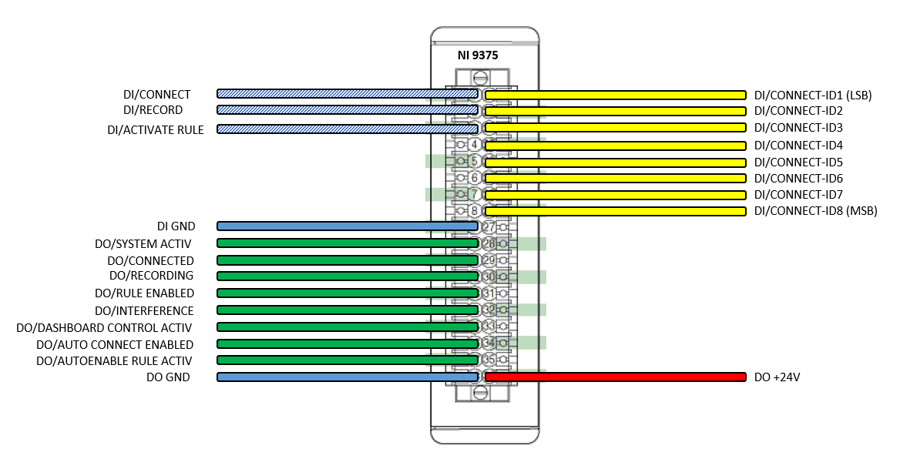

1 Version
This manual was written for SPUs with a Dashboard version v4.0.1.4. If you need an installation manual for an older version see the following link:
2 System Components
The main components for the ICOtronic control system are shown in the figure below. Those are:
- the Sensory Tool Holder (STH), which features the acceleration sensor, a transceiver and a battery
- the Stationary Transceiver Unit (STU), which is located inside the machine room
- the Signal Processing Unit (SPU), which is connected to the STU via cable and must be located outside the machine room
- the Charging Cradle (CC), which is used for charging the battery of the STH
3 Preparations
This document describes the installation of the ICOtronic Control System.
3.2 Required materials and tools
- Typical core stranded cables: with different colours. Your maintenance technicians probably have their own conventions. We will gladly use them.
Diameter is typically 0,75 mm², which are normal for low voltage. Here we also gladly use the conventions of your maintenance technicians.
The cables have to be wired from the electrical cabinet all the way to the installation location of the SPU. (max 6 parallel)
- Ferrules (cable shoes) for the endpoints of the cables
- Cable ties for cable management
- Electrical- and duct tape if something has to be “fixed”
3.3 Needed tools
- Cable cutter
- Cable stripper
- Screwdriver
- Engineer’s pliers
- Label machine or other methods to label the cables
- Multimeter
- Ethernet cable to connect the SPU and the Laptop
- Laptop with Windows (Windows 7 Servicepack 1; Windows 8.1 Update 1 ; Windows 10) operating system and admin rights
3.4 Needed HR/competences
- System engineer
- Machine/electrical maintenance technician
- Computer/IT administrator
- Machine operator
3.5 Needed preparatory work at the machine
Must-Have
- Control system interface (analogue input module) already integrated
- 230V AC or 24V DC of power supply at the electrical cabinet for the SPU
- Laptop with admin rights and network connection (LAN-Port; no internet required)
- Wiring diagram of the machine
- Existing cable bushing into the machining area
4 Setup and cable installation
4.1 Preliminary talk
Through a talk with the customer before the installation, it should be clarified if all preconditions for the installation have been met. Therefore, it is recommended to go through the components of the “Preparations” part again with the customer.
4.2 Inspection of the machine
The machine does not need to be taken out of the production operation for the inspection. It is even better if the machine is under production during inspection. Both the system-engineer and the machine operator inspect the machine to clarify the following points.
4.3 Condition of the machine and integration possibilities for SPU and STU
Appropriate locations for the integration of the SPU and STU have to be found in order to hook up the ICOtronic System to the control system of the machine. The SPU is typically installed in or around the electrical cabinet of the machine. Remember that the SPU has to be powered by 230VAC (50Hz). Moreover, the cables for the controller signals have to be installed from the electrical cabinet to the SPU. Depending on the type of machine tool and the way of parameter adaptation, different numbers of cables will be needed. A typical installation follows:
Two cables, with a diameter of about 0,75mm², for the digital control signal, sent by a M-command (one digital ground and one digital control signal 24V CPL). One or more of this configuration can be installed in one sheathed (armoured shielded) cable. Three (or four if different grounds are used for the analogue control signals) cables with a diameter of about 0,75 mm² for the analogue machine control (one (or two) analogue ground and two analogue control signals 0-10V for feed- and spindle-override). The analogue cables are more susceptible to possible interferences. Therefore, cable shielding could be important for these cables.
The STU has to be positioned in the machining area to guarantee a stable radio connection with the STH. Usually some trial and error is involved to find a good spot for the STU. Therefore, the STU is mounted with a magnetically tape and can swiftly be placed at different locations. Generally, a location around the spindle would be advantageous. However, in this area there is a higher possibility for coolant and flying chips. In case of direct coolant and chip contact with the STU, short-time radio connection instabilities and long-time mechanical damage can happen. Installation on movable parts could damage the signal cables. Installation in the upper parts of the machining area are often a good compromise. The front window of the STU should be visible from the position of the machine operator, because the LEDs on the STU are used as status indicators for the machine operator.
| LED - STATE | MEANING |
|---|---|
| green LEDs in the corners are blinking | STU has Power and is not connected to a holder |
| green LEDs in the corners are shining | STU is connected to a holder |
A cable bushing into the machining area has to be provided for the STU to be installed. The position in the machining area can easily be changed because of the magnetically tape, which is used to install the STU.
5 Installation of the system components
5.1 The setup situation of the machine
To install the system into the machine, the machine must be accessible in a way that the SPU, STU and all cables can be installed. It has to be clarified if this causes problems with existing safety installations. Often ladders and similar equipment will be needed but cannot be placed anywhere without problems.
5.2 The cable routing
After finding the positions to install the SPU and STU, the cables for their connection have to be prepared. The STU is equipped with a 5m long connection cable, which is not (easily) extendable at the installation. It is advisable to install the STU first and then route the cable to the SPU. It is advantageous to place any leftover cable loops near the STU, but out of the machining area. This helps to easily reposition the STU if ever needed.
The cables to connect the SPU with the interface module of the control system have to be prepared during the installation. It is advisable to get the cables directly from the maintenance crew of the machine, so that the house intern standards can be easily used.

6 Network configuration
- Laptop with Windows operating system and admin rights, with already installed LabView Runtime
- download link -> http://www.ni.com/download/labview-run-time-engine-2018/7383/en/ CAUTION: it has to be the 2019 SP1 version
- Ethernet cable to connect the SPU with the Laptop
- IP address of the user end device set. (For details, see the Dashboard instructions)
- Open Dashboard to test the connection
7 Integration of the system
7.1 Function of the interface
The machine control starts the closed loop ICOtronic control of the machine through a digital output. To guarantee that all instances are working as intended, it is necessary to test the function of the SPU output before the final connection of the SPU to the interface module. The right slot of the control signal in the electrical cabinet has to be documented before the installation. Typically, a hat rail module, its PIN-number and its representation in the control will be named. Initially, only the module and the slot are of interest. Additionally the corresponding ground for the module has to be found out.
7.2 Integration of STU and power supply of SPU
After the STU is properly positioned and the cable routed, the STU will be connected to the SPU with the Sub-9-D-plug. The power supply for the STU is realized with a Power Injector.

The two Sub-9-D-plugs are to be connected between the STU Sub-9-D-plug and the corresponding Sub-9-D-plug on the SPU (NI 9862). The cable of the Power Injector is plugged into a clamp on the inside of the Power Injector. This cable and the corresponding power supply can be easily changed with another 24V power supply if wanted(For example directly to a power supply inside the machine or the 24V power supply of the SPU). To change the cable you have to screw open the casing of the Power Injector, loosen the cable from the clamp and insert another cable. The polarity of is marked on the PCB near the clamp.

Additionally connect cables from the Power supply unit to the 24V plug of the SPU. The power supply unit has pins on one side for the 24V output to power the SPU. On the other side of this module there is the ~230V supply for the power supply module. If you already have a 24V power supply at the installation place of the SPU, you can take this supply instead of the power supply module.

After the SPU is powered and the STU is connected, wait for about 15-30 seconds. The LED1, on the module where the STU is connected, should start shining green. If not try to reset the power of the SPU and try again.

7.3 Pin mapping of the SPU
NC… Not Connected, which usually means not used in this application.
Analogue OUT (NI 9263):
| PIN | 0 | 1 | 2 | 3 | 4 | 5 | 6 | 7 | 8 | 9 |
|---|---|---|---|---|---|---|---|---|---|---|
| signal | IFT-Value | IFT GND | Feed Override | Feed GND | Spindle Override | Spindle GND | NC | NC | NC | NC |
The calculated IFT-Value, which represents the stability of the process regarding chatter, is provided as an analogue signal from 0 - 10 V on Pin number 0. However, this is just for the possibility of recording the IFT-Value and therefore, Pin 0 and Pin 1 are not connected with the required analogue interface for the in-process parameter adaption of the control system. The IFT-Value can be scaled and its offset can be changed in the Dashboard. (For more information about the Dashboard and its configuration, see the Dashboard user manual)
Digital IN & OUT (NI 9375):
| PIN | SIGNAL | PIN | SIGNAL |
|---|---|---|---|
| 1 | DI/ACTIVATE RULE | 19 | DI/CONNECT-ID1 |
| 2 | DI/RECORD | 20 | DI/CONNECT-ID2 |
| 3 | NC | 21 | NC |
| 4 | NC | 22 | NC |
| 5 | NC | 23 | NC |
| 6 | NC | 24 | NC |
| 7 | NC | 25 | NC |
| 8 | NC | 26 | NC |
| 9 | GND | 27 | NC |
| 10 | DO/SYSTEM ACTIV | 28 | NC |
| 11 | DO/CONNECTED | 29 | NC |
| 12 | DO/RECORDING | 30 | NC |
| 13 | DO/RULE ENABLED | 31 | NC |
| 14 | DO/INTERFERENCE | 32 | NC |
| 15 | NC | 33 | NC |
| 16 | NC | 34 | NC |
| 17 | NC | 35 | NC |
| 18 | GND | 36 | +24V |
It is possible to automatically connect too up to 3 predefined toolholders with digital signals on the PIN 19 & 20 of the digital module. (ID3 = ID1 + ID2)

7.4 Digital control signal, SPU input & output
In cooperation with the machine operator, the digital output of the machine should be switched on and off. Meanwhile the voltage between the PIN and the corresponding ground is measured. This can be measured either directly in the electrical cabinet or on the corresponding slots on the SPU. If the control signal voltage is significantly different to the expected voltages (0V, 24V) then there is probably something wrong with the corresponding ground. If the reaction of the PIN is correct, the cable designation, terminal number etc. should be recorded into the installation document.
It is advisable to test the function of the signal in a few steps:
- Through directly setting on the module.
- Through setting in the control.
- Through manually setting the corresponding M-commands.
The wiring of the digital outputs of the SPU can be checked directly with the machine control. Therefore you have to start a connection, a recording, etc. via the dashboard. Then check if the signals gotten by the machine control are set high like they should be.
7.5 Analogue control signal, SPU output
The external analogue signals to control the machine tool overrides are created by the SPU. The voltage range is 0-10V and corresponds to an override of 0-100%. The larger the voltage of the signal the larger the reduction of feed and/or spindle speed. The resulting feed and spindle speed is generated by the multiplication of the SPU output and the value set at the machine via the potentiometer.
It is advisable to test the process in a few steps:
First, disconnect the cables for feed and spindle overrides by removing the terminal block of the NI 9263 module from the SPU. Set the mode in the Dashboard to “direct output” (For more information about the Dashboard and its configuration, see the Dashboard user manual). Set the overrides to 40% feed and 50% spindle speed and measure the voltages on the pins of the NI 9263 module from the SPU. The results should be 6V feed and 5V spindle. After that, the removed terminal block of the NI 9263 AO module can be inserted again. Measure the voltages on the terminal in the cabinet of the machine tool with the same Dashboard configuration. The results should also be 6V feed and 5V spindle, check if they are correct. If this test was a success, check all the variables’ values in the control system, which are affected by the SPU output values.
Finally there should be made a cut without removing materials, while the overrides are changed in the dashboard. A change of the values should occur instantly and can be checked via the corresponding values in the control system. Then the SPU should be set back in “watch” mode in the Dashboard (more information about the usage of the Dashboard is shown in the Dashboard user manual).
Now you should be able to find and connect with a sensory tool holder through the Dashboard. Try to shake the tool holder and check if the IFT-Value in the dashboard is changing.
Now you can put the holder into the spindle. Move the spindle to different positions inside the machining area to test if the connection is given in the whole area. If not try positioning the STU to a different place.
Now the system is fully installed and usable.
8 Definition of the LEDs of ICOtronic System
8.1 STH:
The STH has two green LEDs. The one on the “larger” PCB is the charging LED. It is shining when the holder is placed in the charging cradle. (Normally this LED is showing down in the CC and is hard to see.)
The other LED is on the “smaller” PCB. This LED is shining or blinking when the holder is connected to a STU.
8.2 STU:
The STU has four green and red LEDs in the corners. Additionally the STU has two power-LEDs and three CAN-LEDs. When the STU is being connected to power, all LED are shining for about 1 second and then show there normal behaviour.
The CAN-LEDs are blinking and shining dependent on CAN-Messages sent or received. The two power LEDs show if the STU is connected to power. When the STU is connected to power and not connected to a STH, the green LEDs in the corners are blinking. The red ones are off. When a STH is connected to the STU the green LEDs stop blinking and start shining. The red ones still do not shine. When the STH is streaming data to the STU for processing, the red LED can start blinking in an irregular interval symbolizing that a data packet was lost.
8.3 CC:
The CC has two different types of LEDs. The first one is the only LED with another colour than the other ones. This LED is shining when the CC is connected to a power supply and working.
The rest of the LEDs has another colour than the first one. These LEDs symbolize the momentary used charging current. The more LED shine the more current is used to charge the STH. If a STH is placed into the CC and all of these LEDs are off, the STH is charged to the maximum.
8.4 SPU:
The SPU has multiple LEDs. The LEDs on the top left of the SPU are status LEDs showing if the SPU is connected to power and so on. When a LAN-cable is connected and the other side of the LAN-cable is connected to a network or computer, the LEDs at the LAN-port start blinking. On the first module of the SPU, the CAN-module, there are two LEDs. These LED show if the CAN connection is working. After booting the SPU, it takes about 30 seconds for the LEDs to start shining. If not reboot the SPU or control the CAN connection.
9 Interface_specification
9.1 Implementation of 2 analogue input channels
(0-10V), for a voltage-dependent adjustment of the spindle speed override and feed rate override
The voltages (0-10V) as new setpoints for spindle speed and feed rate are provided by the Signal Processing Unit (SPU) of the ICOtronic system. It would be desirable to calculate the final machining overrides by multiplying the values provided from the SPU (0V = 0% reduction, 10V = 100% reduction) with the override variables set via the control panel. The update rate has to be high so it is preferable to compute this as a synchronised action.
9.2 Implementation of at least one digital output channel
(also via synchronised action) to provide an enable signal for the ICOtronic system
Minimum requirements
The system can be activated and deactivated synchronous to the NC program by invoking dedicated M-commands. These M-commands should switch this digital output in order to manipulate the enable signal. (eg: M190 … activate external control → enable is high, M84 … deactivate external control → enable is low)
Possibility of more digital outputs
If the diverse functions:
- connecting to holders
- recording of the data
- using the rule engine
are wanted to be used individually it is needed to implement more digital outputs in the machine. For the recording of data and the activation of the rule engine you need 1 digital output each. At the moment the system can connect up to 3 holders automatically with 2 digital outputs. Therefore a maximum of 4 digital outputs are needed in the machine.
9.3 Implementation of up to 5 digital input channel
(also via synchronised action) to provide information of the ICOtronic system status to the machine
These are all optional. The 5 digital inputs in the machine can be used to see the following status information of the ICOtronic system if wired:
- Is the system active
- Is the system connected to a holder
- Is the system recording
- Is the rule engine active
- Is the system interfering with the machine overrides
9.4 Functions and there needed machine ports
| Functions | Analogue Input | Digital Output | Digital Input | Comment |
|---|---|---|---|---|
| Feed override | +1 | 0 | 0 | |
| Spindle speed override | +1 | 0 | 0 | |
| Analogue feedback of the IFT-Value from SPU to machine | +1 | 0 | 0 | |
| Start recording function through machine signal | 0 | +1 | 0 | |
| Enable the rule engine through machine signal | 0 | +1 | 0 | |
| Connect holder through machine signals | 0 | +log2(number of holders)+1 | 0 | At the moment the firmware supports up to 3 holders to be connected via this function => max. +2 digital outputs |
| SPU feedback to machine: System active | 0 | 0 | +1 | |
| SPU feedback to machine: Holder connected | 0 | 0 | +1 | |
| SPU feedback to machine: Recording active | 0 | 0 | +1 | |
| SPU feedback to machine: Rule engine active | 0 | 0 | +1 | |
| SPU feedback to machine: SPU interfering with the overrides | 0 | 0 | +1 | |
| ALL FUNCTIONS | 2 | 4 | 5 | All functions used and connectable to max. 3 holders given by momentary state of the firmware |
9.4.1 Examples
Only using the dashboard and no connection to the machine
If you only want to control the ICOtronic system via the dashboard and no adaptation of the overrides, then you don’t need any connections to the machine. In this scenario you have to connect, record etc. via hand and the dashbaord on a computer connected to the SPU.
Using the machine to record 1 holder
In this scenario you need 2 digital outputs on the machine. 1 digital output is used to connect/disconnect to the holder and 1 is used to start/stop the recording.
Using the machine with 3 different holders to record and get feedback into the machine if the system is active, connected to a holder and recording
In this scenario you need 3 digital outputs and 3 digital inputs on the machine. 2 digital outputs are used to connect/disconnect to up to 3 holders. 1 digital output is used to start/stop the recording. 1 of the digital inputs is used for the information if the SPU is active, 1 digital input is used for the information if a holder is currently connected to the system and 1 digital input is used for the information if the system is recording at the moment.
Using the rule engine to influence the overrides without feedback from the SPU with 1 holder and no recording
In this scenario you need 2 analogue inputs and 2 digital outputs on the machine. 2 analogue inputs, 1 for the feed override and 1 for the spindle speed override values. 1 digital output is needed to connect to a holder through the machine and 1 digital output is needed to activate the rule engine through the machine.
Using the rule engine to influence the overrides with feedback from the SPU with 2 holders and recording
In this scenario you need 2 analogue inputs, 4 digital outputs and 5 digital inputs on the machine. 2 analogue inputs, 1 for the feed override and 1 for the spindle speed override values. 2 digital output are needed to connect to the 2 holder, 1 digital output is needed to start the recording and 1 digital output is needed to activate the rule engine through the machine. 1 digital input is needed for the information if the SPU is active, 1 digital input is needed for the information if a holder is connected to the system, 1 digital input is needed for the information if the system is recording at the moment, 1 digital input is needed for the information if the rule engine is enabled and 1 digital input is needed to get the information if the system is interfering with the overrides at the moment.
Using OPCUA for system control without changing the overrides
In this scenario you don’t need any connections to the machine. You only need an OPCUA CLIENT which is connected to the system via LAN-cable.
Using OPCUA for system control with usage of the rule engine
In this scenario you need 2 analogue inputs on the machine. 1 analogue input for the override of the feed speed and 1 analogue input for the override of the spindle speed. Additionally you need an OPCUA CLIENT which is connected to the system via LAN-cable.
10 Version
Diese Anleitung wurde geschrieben für eine SPU mit Dashboardversion v4.0.1.4. Für eine Installationsanleitung von älteren Versionen siehe nachstehenden Link:
11 System Komponenten
Die nachfolgende Grafik verleiht einen Überblick über die Komponenten des ICOtronic System. Die Hauptbestandteile sind:
- Sensory Tool Holder (STH)
- Signal Processing Unit (SPU)
- Stationary Transceiver Unit (STU)
- Charging Cradle (CC)
12 Vorbereitung
Dieses Dokument beschreibt die Installation des ICOtronic Control System.
12.2 Benötigtes Verbrauchsmaterial
- Kabel in verschiedenen Farben: Die Haustechnik hat hier vermutlich Konventionen, denen wir uns gerne beugen. Der Querschnitt beträgt üblicherweise 0,75 mm², welche nur Niederspannung führen. Daher kann auch hier gerne auf interne Konventionen Rücksicht genommen werden. Die Kabel müssen aus dem Schaltschrank bis zu dem Aufstellort der SPU reichen (max 6 parallel).
- Aderendhülsenset
- Kabelbinder
- Isolier- und Klebeband, falls wir was „passend“ machen müssen
12.3 Benötigtes Werkzeug
- Seitenschneider
- Abisolierzange
- Schraubenzieher
- Kombi-Zange
- Beschriftungsgerät oder Klebe-Label, um die Kabel zu kennzeichnen
- Multimeter
- Ethernetkabel, um die SPU mit dem Laptop zu verbinden
- Laptop mit Windows (Windows 7 Servicepack 1; Windows 8.1 Update 1 ; Windows 10) Betriebssystem und Administratorberechtigung
12.4 Notwendige HR/Kompetenzen
- System-Ingenieur
- Maschinen Wartungstechniker
- EDV-Admin
- Maschinenführer
13 Aufstellung und Verkabelung
13.1 Vorbesprechung
Vor der Installation soll im Gespräch mit dem Kunden abgeklärt werden, ob alle notwendigen Vorbedingungen erfüllt sind. Dazu empfiehlt es sich, die benötigten Komponenten aus dem Abschnitt “Vorbereitung” nochmals gemeinsam durchzugehen.
13.2 Begutachten der Maschine
Zur Begutachtung muss die Maschine nicht aus dem Produktivbetrieb genommen werden. Es ist sogar förderlich, wenn die Maschine gerade typisch verwendet wird. Der Systemingenieur besichtigt mit dem Maschinenführer die Maschine, um folgende Punkte abzuklären.
13.3 Beschaffenheit der Maschine und Integrationsmöglichkeiten für die SPU und STU
Um das ICOtronic System in die Steuerung einer Maschine zu integrieren, müssen für SPU und STU geeignete Aufstellplätze gefunden werden. Die SPU wird typischerweise in oder rund um den Schaltschrank der Maschine angebracht. Dabei ist zu beachten, dass die SPU mit 230VAC versorgt werden muss. Weiters müssen für den Steuerungseingriff Kabel aus dem Schaltschrank zu der SPU geführt werden. Abhängig vom Aufbau der Maschine und Art des Eingriffes werden dafür unterschiedlich viele elektrische Verbindungen benötigt. Eine typische Ausführung könnte sein:
Zwei Adern mit etwa 0,75mm2 für das digitale Eingriffssignal, ausgelöst durch M-Befehl (Einmal digitale Masse, einmal digitales Steuersignal 24V CPL). Eine oder mehrere solcher Konfigurationen können in einer Mantelleitung geführt werden. Drei Adern mit etwa 0,75mm2 für den analogen Maschinen-Eingriff (Einmal analoge Masse und zwei analoge Steuersignale 0-10V für Vorschub-/Spindel-Override). Die analogen Leitungen sind generell anfälliger auf Störungen, warum hier Schirmung wichtig sein kann.
Die STU muss im Bearbeitungsraum der Maschine angebracht werden, um eine stabile Funkverbindung mit dem STH zu gewährleisten. Einen günstigen Platz für die STU auszusuchen erfordert oft etwas probieren. Daher ist die STU nur magnetisch befestigt und kann schnell manipuliert werden. Generell wäre ein Montageort nahe der Spindel günstig, jedoch kommt es dort auch oft zu vermehrtem Span-und Kühlmittel-Aufkommen. Dieses kann kurzfristig zu instabilen Funkverbindungen, sowie längerfristig zu Beschädigungen der STU führen. Montage auf beweglichen Teilen kann zu Problemen mit dem Anschlusskabel führen. Montagen im oberen Bereich des Maschinenraums sind oft ein guter Kompromiss. Das Frontglas sollte bevorzugt durch das Maschinenfenster einsehbar sein, da die LEDs als Status-Indikator verwendet werden.
| LED - STATUS | BEDEUTUNG |
|---|---|
| Grüne LEDs in den Ecken blinken | STU ist aktiv und kein Halter ist verbunden |
| Grüne LEDs in den Ecken leuchten | STU ist mit Halter verbunden |
Die Kabeldurchführung in den Bearbeitungsraum der Maschine muss vorhanden sein, da sonst die STU nicht platziert werden kann. Die Position im Bearbeitungsraum kann leicht verändert werden, da die STU nur magnetisch montiert wird.
14 Montage der Systemkomponenten
14.1 Die Aufstell-Situation der Maschine
Die Maschine muss für eine Installation soweit zugänglich sein, dass alle Kabel, SPU und STU montiert werden können. Es ist abzuklären, ob das mit irgendwelchen Sicherheitseinrichtungen in Konflikt steht. Oft werden auch Leitern oder ähnliches benötigt, können jedoch nicht ohne weiteres aufgestellt werden.
14.2 Die Kabelführung
Wenn die Positionen von SPU und STU festgelegt wurden, müssen die Kabel für die jeweiligen Verbindungen vorbereitet werden. Die STU kommt mit einem 5m Anschlusskabel, welches nicht (leicht) vor Ort verlängert werden kann. Es ist günstig mit der Platzierung der STU zu beginnen und das Kabel zur SPU zu fädeln. Jedoch sollte eine Kabelschleife nahe der STU, aber außerhalb des Bearbeitungsraumes verbleiben. So kann man die Position der STU im Nachhinein leichter wieder verändern.
Die Kabel für die Anbindung der Steuerung an die SPU müssen vor Ort konfektioniert werden. Es empfiehlt sich, diese Kabel direkt von der Instandhaltung bereitstellen zu lassen, da damit die Konventionen des Betriebes ganz von selbst berücksichtigt werden.

15 Netzwerkkonfiguration
- Laptop mit Windows Betriebssystem und Admin-Berechtigung, sowie bereits installierter LabView Runtime Downloadlink → http://www.ni.com/download/labview-run-time-engine-2018/7383/en/ ACHTUNG: Es muss unbedingt die Runtime 2019 SP1 installiert werden
- Ethernetkabel, um die SPU Box mit dem Laptop zu verbinden
- IP-Adresse beim User Endgerät gesetzt. (Für Details siehe die Dashboard Anleitung)
- Dashboard öffnen, um Verbindung zu überprüfen
16 Anbinden der Steuerung
16.1 Funktion der Schnittstelle
Die Maschinensteuerung schaltet die Regelung der Maschine durch einen digitalen Ausgang ein. Um sicherzustellen, dass alle Instanzen funktionieren, sollte die Funktion des Ausganges vor dem finalen Anbinden verifiziert werden. Der richtige Steckplatz des Steuersignals im Schaltschrank muss vor der Installation dokumentiert sein. Typischerweise wird ein Hutschienen-Modul, dessen Pin sowie dessen Repräsentanz in der Steuerung im Schaltplan genannt. Vorerst sind nur das Modul und der Steckplatz von Interesse. Außerdem muss aus dem Schaltplan die zugehörige Bezugsmasse für dieses Modul abgelesen werden.
16.2 Integration von STU und der Energieversorgung der SPU
Nachdem die STU im Maschinenraum fixiert und das Kabel zur SPU verlegt wurde, müssen diese Komponenten mittels des Sub-9-D-Steckers miteinander verbunden werden. Die Spannungsversorgung der STU wird mittels eines Powerinjectors realisiert.
Die zwei Sub-9-D-Stecker des Powerinjectors werden zwischen den korrespondierenden Stecker des STU Kabels und der SPU (NI 9862) eingesteckt. Das Versorgungskabel des Powerinjectors ist im Inneren des Gehäuses mittels einer Klemme befestigt. Dieses Kabel und sein Netzteil können leicht gelöst werden und durch etwaige andere 24V Versorgung (zum Beispiel direkt aus dem Steuerkasten der Maschine oder dem 24V Netzteil der SPU) ausgetauscht werden. Dazu muss nur das silberne Gehäuse aufgeschraubt werden und das Kabel in der Klemme gelöst werden und durch eigene ausgetauscht werden. Die Polarität ist auf der Platine bei der Klemme gekennzeichnet.
Des Weiteren gehört der 24V Stecker der SPU nun mit dem 24V Netzteil verbunden. Das Netzteil besitzt auf der einen Seite Anschlüsse für 24V zur Versorgung der SPU, auf der anderen Seite besitzt sie Anschlüsse für die 230VAC Versorgung des Netzteils (sollte sich am Installationsort bereits ein 24V Netzteil befinden, kann dieses natürlich verwendet werden anstelle des Netzteil Modules).
Nachdem die STU mit der SPU verbunden und die Versorgung aktiviert ist, sollte nach etwa 15-30 Sekunden Wartezeit die LED1 grün leuchten (LED1 befindet sich auf dem Modul auf dem die STU angeschlossen wird). Sollte die LED nicht leuchten, starten Sie die SPU neu mittels erneutem Trennen und Verbinden der Versorgung und versuchen Sie es erneut.
16.3 Pinbelegung der SPU
NB… Nicht benutzt. In dieser Anwendung gleichbedeutend damit, dass nichts angeschlossen ist.
Analoger Ausgang (NI 9263):
| PIN | 0 | 1 | 2 | 3 | 4 | 5 | 6 | 7 | 8 | 9 |
|---|---|---|---|---|---|---|---|---|---|---|
| Signal | IFT-Wert | IFT-GND | Vorschub Override | Vorschub GND | Drehzahl Override | Drehzahl GND | NB | NB | NB | NB |
Der berechnete IFT-Wert, der Auskunft über die Stabilität des Systems liefert, wird als analoges Signal mit 0-10V auf Pin 0 zur Verfügung gestellt. Dies bietet nur die Möglichkeit, den IFT-Wert zu erfassen. Deshalb müssen Pin 0 und 1 nicht mit dem analogen Anschluss der Maschine verbunden werden. Diese beiden Pins werden nicht für den Echtzeit Prozesseingriff benötigt. Die Skalierung und der Offset des ausgegebenen IFT-Wertes kann im Dashboard angepasst werden (für mehr Informationen zum Dashboard und dessen Einstellungen siehe die Dashboard Benutzeranleitung).
Digitaler Eingang & Ausgang (NI 9375):
| PIN | SIGNAL | PIN | SIGNAL |
|---|---|---|---|
| 1 | DI/ACTIVATE RULE | 19 | DI/CONNECT-ID1 |
| 2 | DI/RECORD | 20 | DI/CONNECT-ID2 |
| 3 | NB | 21 | NB |
| 4 | NB | 22 | NB |
| 5 | NB | 23 | NB |
| 6 | NB | 24 | NB |
| 7 | NB | 25 | NB |
| 8 | NB | 26 | NB |
| 9 | GND | 27 | NB |
| 10 | DO/SYSTEM ACTIV | 28 | NB |
| 11 | DO/CONNECTED | 29 | NB |
| 12 | DO/RECORDING | 30 | NB |
| 13 | DO/RULE ENABLED | 31 | NB |
| 14 | DO/INTERFERENCE | 32 | NB |
| 15 | NB | 33 | NB |
| 16 | NB | 34 | NB |
| 17 | NB | 35 | NB |
| 18 | GND | 36 | +24V |
Die SPU kann mittels der digitalen Eingänge auf Pin 19&20 bis zu 3 zuvor im Dashboard definierte Halter automatisch verbinden. (ID3 = ID1 + ID2)
16.4 Digitale Steuersignale, SPU Eingang & Ausgang
In Absprache mit dem Maschinenbediener soll der zu verifizierenden Ausgänge wechselweise ein- und ausgeschaltet werden. Dabei überprüft man die Spannung zwischen dem Steckplatz und der Bezugsmasse. Das kann entweder direkt am Schaltschrank oder an der von der SPU getrennten Klemmleiste erfolgen. Sollte die Steuerspannung von den erwarteten Spannungsniveaus (0V, 24V) signifikant abweichen, ist vermutlich etwas mit der Bezugsmasse nicht in Ordnung. Wenn die Reaktion korrekt erfolgt, sollten die Kabelbezeichnungen, Klemmen-Nummern usw. in der Installationsdokumentation vermerkt werden.
Es empfiehlt sich, die Funktion dieses Signals in Stufen zu prüfen:
- Durch direktes Schreiben auf das Modul.
- Durch Schreiben der Variable in der Steuerung.
- Durch manuelles Setzen der entsprechenden M-Befehle.
Die Verkabelung der digitalen Ausgänge der SPU kann direkt in der Maschinensteuerung überprüft werden. Hierfür ist es nötig im Dashboard z.B. eine Aufnahme zu starten, sich mit einem Halter zu verbinden etc. Danach in der Maschinensteuerung überprüfen ob das passende Signal gesetzt wurde.
16.5 Analoge Steuersignale, SPU Ausgang
Die analogen Steuersignale zum Einstellen des Maschineneingriffs werden von der SPU generiert. Die Spannungswerte reichen von 0-10V und entsprechen einer Reduktion des Overrides von 0-100%. Also je höher die Spannung, desto stärker die Reduktion von Vorschub bzw. Spindel. Der Wert in der Steuerung entspricht hierbei einer Multiplikation von Potenziometer und SPU Ausgabe. Es empfiehlt sich wieder stufenweise vorzugehen:
Als Erstes die Kabel für Vorschub und Drehzahl Overrides vom Modul NI9263 der SPU trennen. Danach im Dashboard den Modus auf “direct output” stellen (für mehr Informationen zum Dashboard und dessen Konfigurationen siehe die Dashboard Benutzeranleitung). Nun die Overrides auf 40% Vorschub und 50% Drehzahl einstellen und im Anschluss die Spannungen an den zugehörigen Pins des Moduls NI 9263 der SPU messen. Das Ergebnis sollte 6V bei Vorschub und 5V bei Drehzahl sein. Nun können die Kabel zum Modul NI 9263 wieder verbunden werden. Nun die Spannungen bei gleichbleibenden Einstellungen an den Anschlussklemmen in der Maschine messen. Diese sollten wie zuvor 6V für Vorschub und 5V für Drehzahl betragen. Sollten die Spannungen stimmen, so müssen nun die Variablen in der Maschinensteuerung, welche diese repräsentieren, auf ihre Richtigkeit überprüft werden.
Nun sollte noch ein Luftschnitt ohne Materialabtrag gemacht werden. Während des Schnittes sollten die Overrides verändert und überprüft werden, ob Vorschub und Drehzahl dadurch geändert werden und ob die angezeigten Werte der Maschinensteuerung mit diesen übereinstimmt. Danach sollte die SPU wieder in den “watch” Modus versetzt werden (für mehr Informationen zum Dashboard siehe die Dashboard Benutzeranleitung).
Abschließend sollte nun die Verbindung mit dem sensorischen Werkzeughalter getestet werden. Dazu im Dashboard den gewünschten Halter auswählen und nach erfolgreichem Verbindungsaufbau den Halter schütteln und überprüfen, ob sich der IFT-Wert im Dashboard verändert.
Nun kann der Halter in die Spindel eingespannt werden. Danach mit der Spindel in verschiedene Positionen im Bearbeitungsraum fahren und überprüfen, ob der Halter an jeder Stelle eine Verbindung hat. Sollte dies nicht der Fall sein, so kann die STU an eine andere Position verschoben und erneut getestet werden.
Nun sollte das System installiert sein und einsatzbereit sein
17 Bedeutungen der LEDs des ICOtronic System
17.1 STH:
Die STH hat 2 grüne LEDs. Die eine auf dem “größeren” PCB ist die Ladungsanzeige. Diese LED leuchtet wenn der Halter in der Ladestation eingelegt ist. (Im Normallfall zeigt diese LED in der CC nach unten und ist daher schlecht zu sehen.)
Die andere LED sitzt auf dem “kleineren” PCB. Diese LED leuchtet oder blinkt wenn der Halter mit der STU verbunden ist.
17.2 STU:
Die STU hat 4 grüne und 4 rote LEDS in den Ecken. Zusätzlich besitzt die STU 2 Power-LEDS und 3 CAN-LEDs. Wenn die STU an Spannung angelegt wird leuchten alle LEDs für ca. 1 Sekunde und leuchten danach in ihren geplanten Funktionen.
Die CAN-LEDs leuchten dementsprechend welche Nachrichten gesendet und empfangen werden. Die beiden Power-LEDs zeigen das die STU mit der Versorgung verbunden ist.
Wenn die STU mit Spannung versorgt ist aber nicht mit einem Halter verbunden ist blinken die 4 grünen LEDs in den Ecken der STU. Die roten LEDs leuchten nicht. Wenn ein Halter mit der STU verbunden wird hören die grünen LEDs auf zu blinken und starten dauerhaft zu leuchten. Die roten LEDs leuchten weiterhin nicht. Wenn der Halter Streaming-Daten an die STU sendet kann es dazu kommen das die roten LEDs immer wieder kurz in unregelmäßigen Intervallen blinken. Dies symbolisiert das Datenpakete bei der Funkübertragung verloren gegangen sind.
17.3 CC:
Die CC besitzt 2 verschieden farbige LED Typen. Die eine ist die einzige LED in einer anderen Farbe als alle anderen. Wenn diese LED leuchtet ist die CC an die Versorgung angeschlossen und funktioniert.
Die restlichen LEDs haben alle eine andere Farbe als die erste. Diese LEDs symbolisieren den aktuell genutzten Ladestrom. Je mehr LEDs leuchten um so mehr Strom wird genutzt um den Halter zu laden. Wenn ein Halter in die CC eingelegt wird und alle LEDs, außer der ersten andersfarbigen LED, hören auf zu leuchten, ist der Halter auf seine maximale Spannung aufgeladen.
17.4 SPU:
Die SPU hat mehrere LEDs. Die LEDs auf der oberen, linken Seite sind Status-LEDs welche die Versorgung und andere Parameter anzeigen. Wenn ein LAN-Kabel verbunden ist und das andere Ende des Kabels mit einem Netzwerk oder Computer verbunden ist, startet der LAN-Port zu blinken. Auf dem ersten Modul der SPU, dem CAN-Modul, befinden sich 2 LEDs. Diese signalisieren ob die CAN-Verbindung funktioniert oder nicht. Nach dem Starten der SPU braucht es etwa 30 Sekunden bis die LEDs anfangen grün zu leuchten. Wenn sie nicht leuchten oder rot leuchten muss die Verkabelung am CAN-Modul überprüft werde beziehungsweise die SPU neu gestartet werden.
18 Schnittstellenspezifikation
18.1 Implementierung von 2 analogen Eingängen
(0 - 10V), die z.B. mit Synchronaktionen abgefragt werden können
Die Signal Processing Unit (SPU) des ICOtronic Systems liefert die Stellwerte für Vorschub und Drehzahl als Analogsignal (0 - 10V). Beim Einbau der Analog-Eingangsmodule und der Inbetriebnahme soll ein Unterprogramm eingespielt werden, dass den Wert des analogen Eingangssignals mit dem Overwrite von Vorschub der Linearachsen und Spindeldrehzahl verrechnet (0V = 100% Overwrite, 10V = 0% Overwrite). Es soll auch eine Verrechnung des manuellen Overwrite erfolgen (limitierend oder multiplikativ).
18.2 Implementierung von mindestens einem digitalen Ausgängen
(ebenfalls über Synchronaktionen) zur Ansteuerung des ICOtronic Systems
Minimalanforderung
Ein digitaler Ausgang der Maschine welcher genutzt werden kann um die Verbindung und mehr des ICOtronic Systems zu aktivieren.
Beispiel: Mit Aufruf der M-Funktion M190 im Teileprogramm wird ein digitaler Ausgang geschalten und damit das somit der externe Prozesseingriff durch das ICOtronic System freigeschalten. Mit M191 wird die externe Regelung wieder deaktiviert.
Möglichkeiten mit mehr digitalen Ausgängen
Wenn die verschiedenen Funktionen:
- Verbindung zu Halter herstellen
- Datenaufnahme aktivieren
- Regelung aktivieren
einzeln benutzt werden sollen dann müssen mehr digitale Ausgänge an der Steuerung implementiert werden. Für die Datenaufnahme und die Regelung aktivieren werden jeweils 1 digitaler Ausgang benötigt. Für die Verbindung zu zuvor definierten Haltern können momentan 3 verschiedene Halter mittels 2 digitalen Ausgängen angesprochen werden. Daher ergibt sich eine momentane Anzahl von maximal 4 benötigten digitalen Ausgängen der Maschinensteuerung.
18.3 Implementierung von bis zu 5 digitalen Eingängen
(ebenfalls über Synchronaktionen) zur Informationsabfrage der ICOtronic Systems Statusinformationen in der Maschine
Die Implementierung dieser Signale ist optional. Bis zu 5 digitale Eingänge der Maschine können genutzt werden um die folgenden Statusinformationen des ICOtronic Systems zu bekommen:
- Ist das System aktiv
- Ist das System verbunden mit einem Halter
- Nimmt das System gerade Daten auf
- Ist die Regelung durch das System gerade aktiv
- Greift das System gerade aktiv in die Overrides der Maschine ein
18.4 Funktionen und deren benötigte Maschinen Ports
| Funktionen | Analog Eingang | Digitaler Ausgang | Digitaler Eingang | Anmerkung |
|---|---|---|---|---|
| Regelung-Vorschub | +1 | 0 | 0 | |
| Regelung-Drehzahl | +1 | 0 | 0 | |
| Analoger Feedback des IFT-Wertes von SPU an Maschine | +1 | 0 | 0 | |
| Aufnahme durch Maschine starten | 0 | +1 | 0 | |
| Rule engine durch Maschine aktivieren | 0 | +1 | 0 | |
| Halter durch Maschine verbinden | 0 | +log2(Halteranzahl)+1 | 0 | Momentan sind maximal 3 Halter mittels Signalen von der Maschine verbindbar => Max. +2 Digitale Ausgänge |
| SPU Rückmeldung an Maschine: System aktiv | 0 | 0 | +1 | |
| SPU Rückmeldung an Maschine: Halter verbunden | 0 | 0 | +1 | |
| SPU Rückmeldung an Maschine: Aufnahme läuft | 0 | 0 | +1 | |
| SPU Rückmeldung an Maschine: Rule engine aktiv | 0 | 0 | +1 | |
| SPU Rückmeldung an Maschine: Overrides werden überschrieben | 0 | 0 | +1 | |
| ALLE FUNKTIONEN | 2 | 4 | 5 | Alle Funktionen ausgewählt und durch momentane Firmware maximal unterstützte 3 Halter |
18.4.1 Beispiele
Verwendung des Dashboards ohne Verbindung zur Maschine
Wenn Sie das ICOtronic-System nur über das Dashboard steuern möchten, ohne Vorschub und Drehzahl anzupassen, benötigen Sie keine Verbindungen zur Maschine. In diesem Szenario müssen Sie Verbindungen und Aufnahmen manuell über das Dashboard auf einem mit der SPU verbundenen Computer vornehmen.
Verwendung der Maschine zur Aufnahme eines Halters
In diesem Szenario benötigen Sie 2 digitale Ausgänge an der Maschine. Ein digitaler Ausgang wird zum Verbinden/Trennen des Halters verwendet und ein anderer zum Starten/Stoppen der Aufnahme.
Verwendung der Maschine mit 3 verschiedenen Haltern zum Aufnehmen und Rückmeldungen an die Maschine ob das System aktiv ist, mit einem Halter verbunden ist und gerade eine Aufnahmen gemacht wird
In diesem Szenario benötigen Sie 3 digitale Ausgänge und 3 digitale Eingänge an der Maschine. 2 digitale Ausgänge werden verwendet, um bis zu 3 Halter zu verbinden/trennen. 1 digitaler Ausgang wird verwendet, um die Aufnahme zu starten/stoppen. 1 der digitalen Eingänge wird für die Information verwendet, ob die SPU aktiv ist, 1 digitaler Eingang für die Information, ob ein Halter derzeit mit dem System verbunden ist, und 1 digitaler Eingang für die Information, ob das System gerade eine Datenaufnahme macht.
Verwendung der Rule-Engine zur Beeinflussung der Overrides mit 1 Halter ohne Rückmeldungen von der SPU und ohne Aufnahme
In diesem Szenario benötigen Sie 2 analoge Eingänge und 2 digitale Ausgänge an der Maschine. 2 analoge Eingänge, einer für den Vorschub-Override und einer für den Drehzahl-Override. 1 digitaler Ausgang wird benötigt, um über die Maschine eine Verbindung zu einem Halter herzustellen, und 1 digitaler Ausgang, um die Rule-Engine über die Maschine zu aktivieren.
Verwendung der Rule-Engine zur Beeinflussung der Overrides, mit 2 Haltern, mit Rückmeldung von der SPU und Aufnahmen
In diesem Szenario benötigen Sie 2 analoge Eingänge, 4 digitale Ausgänge und 5 digitale Eingänge an der Maschine. 2 analoge Eingänge, einer für den Vorschub-Override und einer für den Drehzahl-Override. 2 digitale Ausgänge werden benötigt, um 2 Halter zu verbinden. 1 digitaler Ausgang wird benötigt, um die Aufnahme zu starten, und 1 digitaler Ausgang, um die Rule-Engine über die Maschine zu aktivieren. 1 digitaler Eingang wird für die Information benötigt, ob die SPU aktiv ist, 1 digitaler Eingang für die Information, ob ein Halter mit dem System verbunden ist, 1 digitaler Eingang für die Information, ob das System gerade eine Datenaufnahme macht, 1 digitaler Eingang für die Information, ob die Rule-Engine aktiviert ist, und 1 digitaler Eingang, um die Information zu erhalten, ob das System gerade die Overrides beeinträchtigt.
Verwendung von OPCUA zur Systemsteuerung ohne Änderung der Overrides
In diesem Szenario benötigen Sie keine Verbindungen zur Maschine. Sie benötigen lediglich einen OPCUA-CLIENT, der über ein LAN-Kabel mit dem System verbunden ist.
Verwendung von OPCUA zur Systemsteuerung mit Verwendung der Rule-Engine
In diesem Szenario benötigen Sie 2 analoge Eingänge an der Maschine. Einer für den Vorschub-Override und einer für den Drehzahl-Override. Zusätzlich benötigen Sie einen OPCUA-CLIENT, der über ein LAN-Kabel mit dem System verbunden ist.